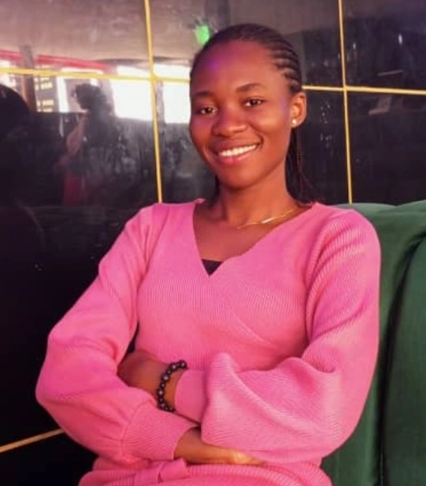

About me

I’m Lilian Uchechi Obasi, a Frontend Developer in the making with a background in Agricultural Science. My journey began in the fields, studying crop systems and agricultural processes, but my curiosity gradually pulled me toward the logic and creativity of code. Today, I’m focused on building clean, responsive web interfaces that solve real problems.
Beyond tech, I have a deep love for fiction writing. Over the years, some of my stories have been published online, and storytelling remains one of the ways I explore structure, emotion, and perspective, skills that quietly influence how I approach design and user experience.
I’m currently based in Imo State, Nigeria, actively building my portfolio and continuing my transition into frontend development.